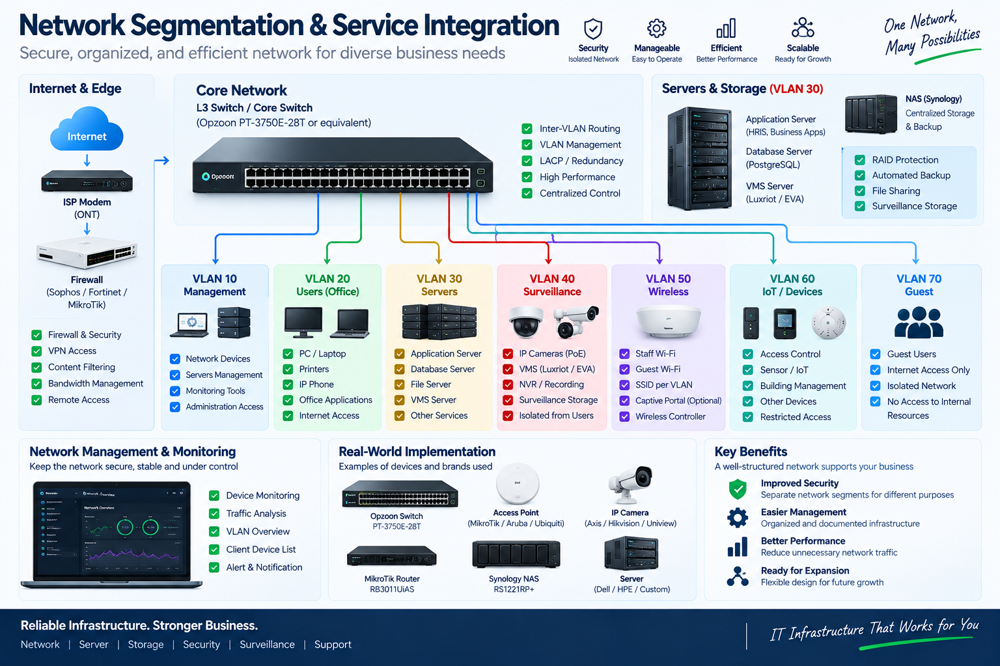

Merancang dan mendukung infrastruktur IT terstruktur untuk jaringan, server, storage, surveillance dan sistem bisnis.
Menyusun infrastruktur jaringan dan sistem pendukung agar konektivitas, segmentasi, storage dan surveillance dapat dikelola secara terstruktur.
Solusi disusun dengan memperhatikan alur kerja yang jelas, maintainability, integrasi dan kebutuhan deployment yang praktis.
Arsitektur, integrasi dan kebutuhan operasional menjadi bagian dari perancangan solusi.
Menerjemahkan kebutuhan menjadi struktur teknis yang praktis.
Menghubungkan aplikasi, layanan atau infrastruktur yang dibutuhkan.
Menguji workflow, konektivitas dan perilaku sistem.

Ceritakan apa yang ingin Anda otomatisasi, integrasikan, deploy atau perbaiki.